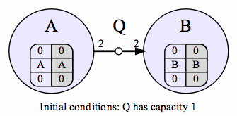
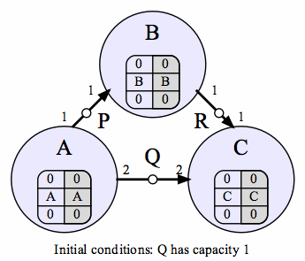

The first example is simple, but important -- the algorithm detects a deadlock for the most basic of cases. Node A continually tries to write 2 samples to queue Q, and node B continually tries to read 2 samples from Q. Q starts with a capacity of only 1. We know that until Q has a capacity of 2, A cannot write the 2 tokens. This example shows that the D4R algorithm detects that Q is too small, and causing an artificial deadlock.
|  |
Node A() { while (true) Q.put(2); }
Node B() { while (true) Q.get(2); }
|
Note that this is not the only possible order of node executions, but that all orders will eventually lead to Q being lengthened.
The second example is more complicated, and illustrates an artificial deadlock containing 3 nodes. Queue Q must grow to size 2 before the program can function normally. Again, this example demonstrates that this problem is detected and resolved.

|
Node A() {while (true) { Q.put(2); Q.put(1); }}
Node B() {while (true) { P.get(1); R.put(1); }}
Node C() {while (true) { R.get(1); Q.get(2); }}
|
Again, the nodes could have executed in many different orders -- this order is one possible execution order. Note that step 6, node C knows that a deadlock exists, however the culpable queue is not located until step 7.